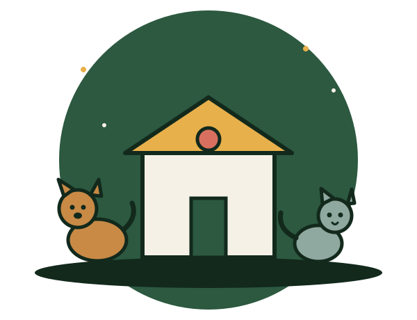
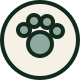

Adoption
Une rencontre, un entretien, puis une visite à domicile. Le processus prend deux semaines en moyenne.
Refuge sans euthanasie — Montréal
Le Second Souffle accueille chiens et chats abandonnés, les soigne, les socialise, et prend le temps qu'il faut pour leur trouver la bonne famille. Aucun animal n'est euthanasié faute de place.

Le refuge fonctionne grâce à quatre équipes qui se relaient sept jours sur sept. Aucun animal ne repart sans avoir été examiné, stérilisé et vacciné.
Une rencontre, un entretien, puis une visite à domicile. Le processus prend deux semaines en moyenne.
Vaccination, stérilisation, micropuce et traitement des blessures, sur place dans notre clinique.

Pour les chatons, les convalescents et les animaux anxieux, un foyer temporaire vaut mieux qu'un enclos.
Promenades, socialisation, entretien des locaux : quarante bénévoles font tourner le refuge chaque semaine.
Chaque race y est décrite avec son tempérament et son origine, pour vous aider à savoir quel compagnon conviendrait à votre quotidien.
Chargement des fiches…
Chaque adoption se poursuit bien après la sortie du refuge. Voici ce que nous racontent les familles, quelques mois plus tard.
★★★★★
L'entretien d'adoption a duré une heure et personne n'a essayé de me convaincre. On m'a plutôt aidée à comprendre quel chat conviendrait à un petit appartement. Mistral dort sur le radiateur depuis deux ans.
★★★★★
Nous cherchions un chat tolérant avec de jeunes enfants. L'équipe nous a présenté trois candidats et nous a laissé revenir trois fois avant de décider. Aucune pression, que des conseils.
★★★★★
Mon chat est arrivé craintif et il a fallu six mois de patience. Le refuge a répondu à mes courriels tout ce temps-là, gratuitement. C'est rare, un suivi comme celui-là.
Le refuge est ouvert aux visites libres du mercredi au dimanche. Aucun rendez-vous nécessaire : passez, prenez le temps, repartez y penser.
Nous écrire